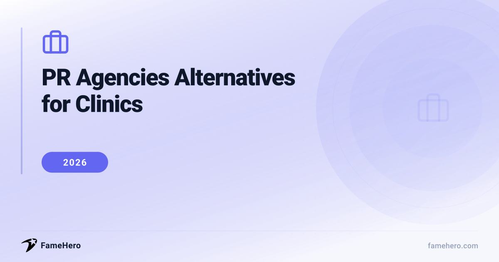

PR Agencies Alternatives for Clinics in 2026 (Beyond Traditional Approaches)

PR agencies Alternatives for Clinics (2026)
Clinics often face challenges with traditional PR agencies, including high expenses, rigid contracts, and delayed outcomes. Some agencies may not grasp the nuances of the healthcare industry, resulting in strategies that don't resonate. Poor communication and a lack of transparency can also hinder progress and impact the overall value received.
When exploring alternatives, clinics should seek providers with adaptable pricing, such as subscription or tiered plans, and a clear focus on the healthcare sector. A history of delivering measurable results and a flexible, collaborative approach are vital for a successful partnership.
Try guaranteed press coverage — from $49
No retainers, no commitments. Run a free brand scan to see your visibility score.
PR Agencies Alternatives for Clinics (2026)
FameHero
famehero.comBudgetSmall to medium-sized clinics and individual practitionersStarting at $49 per placementFameHero is a brand visibility platform that leverages AI-driven analysis and expert storytelling to secure media placements. It offers a transparent, pay-per-placement model, allowing clinics to bypass the often opaque retainer structures of traditional agencies. This approach is ideal for clinics seeking direct media exposure without the overhead of a full-service agency.
StrengthsAI-driven analysis, expert storytelling, transparent pay-per-placement model, media placementsBest forClinics seeking direct media exposure without the overhead of a full-service agency.Not ideal forClinics requiring comprehensive PR strategies that include deep policy review, embedded compliance, and creative development under one roof, as FameHero focuses primarily on media placements.RedPress
redpress.netMid-marketIndividual practitioners, private clinics, aesthetic centers, and health tech startupsContact for pricingRedPress is a specialized press release distribution service engineered for the specific needs of doctors, private clinics, and health tech startups. It prioritizes placements on health, wellness, lifestyle, and local news websites, ensuring that news reaches potential patients. Its doctor-centric SEO approach aims to boost personal branding and improve search rankings for high-value keywords.
StrengthsSpecialized for healthcare, doctor-centric SEO, local news placements, boosts personal brandingBest forIndividual practitioners, private clinics, aesthetic centers, and health tech startups looking to improve search rankings and local visibility.Not ideal forLarge healthcare systems or organizations requiring complex, multi-faceted PR campaigns beyond press release distribution, or those needing extensive media relations and crisis management.Avenue Z
avenuez.comPremiumHigh-growth HealthTech brands and companies in regulated healthcare marketsContact for pricingAvenue Z positions itself as a next-generation PR agency for high-growth HealthTech brands, excelling at translating complex healthcare technologies into compelling narratives for media and investors. It integrates PR with performance metrics, connecting earned media to tangible business outcomes, which is crucial for companies in regulated markets where credibility and ROI are paramount.
StrengthsHealthTech focus, translates complex tech into narratives, integrates PR with performance metrics, ROI-drivenBest forHigh-growth HealthTech brands and companies in regulated healthcare markets needing to demonstrate a strong ROI through their PR efforts.Not ideal forTraditional clinics or healthcare providers not focused on technology innovation or those not needing to demonstrate a strong ROI through their PR efforts.KNB Communications
knbcomm.comPremiumEstablished and scaling organizations in healthcare and life sciencesContact for pricingKNB Communications exclusively focuses on healthcare, health tech, life sciences, biotech, and dental technology. This specialization allows for deep expertise in complex, regulated environments. They differentiate themselves by using senior professionals and integrating PR with thought leadership and marketing to drive reputation and growth, making them ideal for established and scaling organizations.
StrengthsExclusive healthcare focus, deep expertise in regulated environments, senior professionals, integrated PR and marketingBest forEstablished and scaling organizations in healthcare and life sciences that require specialized, integrated communications.Not ideal forNon-healthcare related businesses or very small clinics with limited budgets that cannot afford a specialized, integrated communications approach.Spynn PR Agency
spynn.comMid-marketMedical practices, hospitals, and healthcare organizationsContact for pricingSpynn PR Agency offers specialized PR services for medical professionals, hospitals, and healthcare organizations, focusing on building trust and credibility. They emphasize HIPAA-aligned workflows and review protocols to ensure compliant and effective messaging. Spynn also assists with physician branding and thought leadership.
StrengthsHIPAA-aligned workflows, physician branding, thought leadership, healthcare-specific messagingBest forMedical practices, hospitals, and healthcare organizations prioritizing compliance and seeking to build trust and credibility.Not ideal forClinics or healthcare providers not prioritizing compliance or those seeking a broad range of services outside of healthcare-specific PR, such as general consumer product marketing.Prose Media
prosemedia.comPremiumHospitals, health systems, medical practices, and health brandsContact for pricingProse Media is a full-service digital marketing and PR agency that serves hospitals, health systems, medical practices, and health brands. They are adept at crafting clear, empathetic, and patient-friendly copy, ensuring accuracy and compliance. Prose offers an integrated approach covering SEO, SEM, PR, and social media to maximize visibility and patient engagement.
StrengthsFull-service digital marketing and PR, patient-friendly copy, integrated approach (SEO, SEM, PR, social), HIPAA compliance focusBest forHospitals, health systems, medical practices, and health brands seeking an integrated digital marketing and PR strategy focused on patient engagement.Not ideal forClinics that only require basic press release distribution or those not interested in a comprehensive digital marketing and content strategy.BoardroomPR
boardroompr.comPremiumPhysician practices, accountable care organizations (ACOs), surgery centers, hospitals, and medical device companies, particularly those with a presence in FloridaContact for pricingBoardroomPR is a Florida-based PR agency with a strong focus on the healthcare sector, serving physician practices, hospitals, and medical device companies. They specialize in securing positive media coverage in print and on television, aiming for significant presence across local, regional, and national levels. They also offer social media management and video production.
StrengthsStrong healthcare focus, local/regional/national media coverage, social media management, video productionBest forPhysician practices, hospitals, and medical device companies, particularly those with a presence in Florida, seeking traditional media relations and video production.Not ideal forClinics outside of BoardroomPR's primary service areas (primarily Florida) or those not seeking traditional media relations and video production services.TrizCom Public Relations
trizcom.comEnterpriseSmall clinics, large hospitals, pharmaceutical companies, medical devices, and other healthcare organizationsContact for pricingTrizCom PR offers specialized healthcare PR services for a diverse range of organizations, from small clinics to large hospitals and pharmaceutical companies. They focus on building trust, credibility, and authority, managing reputations, and attracting patients. TrizCom transforms complex information into digestible content for various media channels and offers services like AI optimization, crisis communications, and media training.
StrengthsSpecialized healthcare PR, reputation management, AI optimization, crisis communications, media trainingBest forSmall clinics to large hospitals and pharmaceutical companies needing comprehensive PR strategies including crisis management and AI optimization.Not ideal forClinics that do not require a comprehensive PR strategy encompassing crisis management, AI optimization, or community engagement, or those seeking only basic press release services.
PR agencies Alternatives for Clinics (2026)
| Alternative | Website | Replaces | Price Range | Best For |
|---|---|---|---|---|
| FameHero | famehero.com | Direct media exposure without the overhead of a full-service agency. | Starting at $49 per placement | Clinics seeking direct media exposure without the overhead of a full-service agency. |
| RedPress | redpress.net | Press release distribution and local visibility for individual practitioners and smaller clinics. | Contact for pricing | Individual practitioners, private clinics, aesthetic centers, and health tech startups looking to improve search rankings and local visibility. |
| Avenue Z | avenuez.com | PR efforts focused on demonstrating a strong ROI for HealthTech brands in regulated markets. | Contact for pricing | High-growth HealthTech brands and companies in regulated healthcare markets needing to demonstrate a strong ROI through their PR efforts. |
| KNB Communications | knbcomm.com | Specialized, integrated communications for established and scaling healthcare and life sciences organizations. | Contact for pricing | Established and scaling organizations in healthcare and life sciences that require specialized, integrated communications. |
| Spynn PR Agency | spynn.com | Healthcare-specific PR and messaging that prioritizes compliance and builds trust. | Contact for pricing | Medical practices, hospitals, and healthcare organizations prioritizing compliance and seeking to build trust and credibility. |
| Prose Media | prosemedia.com | Integrated digital marketing and PR strategy focused on patient engagement for hospitals and health brands. | Contact for pricing | Hospitals, health systems, medical practices, and health brands seeking an integrated digital marketing and PR strategy focused on patient engagement. |
| BoardroomPR | boardroompr.com | Traditional media relations and video production for physician practices and hospitals, especially in Florida. | Contact for pricing | Physician practices, hospitals, and medical device companies, particularly those with a presence in Florida, seeking traditional media relations and video production. |
| TrizCom Public Relations | trizcom.com | Comprehensive PR strategies including crisis management and AI optimization for a wide range of healthcare organizations. | Contact for pricing | Small clinics to large hospitals and pharmaceutical companies needing comprehensive PR strategies including crisis management and AI optimization. |
Transitioning from Traditional PR Agencies
- Evaluate Fit: Prioritize alternatives with proven healthcare/clinic experience. Look for understanding of patient privacy (HIPAA) and medical communication nuances.
- Contract Review: Scrutinize service level agreements (SLAs) for clear deliverables, reporting frequency, and exit clauses. Ensure data ownership is defined.
- Measure Results Early: Establish baseline metrics (website traffic, patient inquiries, media mentions) before switching. Track these diligently during the transition.
- Timeline Expectations: Understand that building new relationships and achieving significant results in the clinic sector can take 3-6 months.
- Avoid Mistakes: Don't underestimate the learning curve. Ensure seamless handover of existing campaigns and maintain consistent messaging.
Common Pitfalls When Choosing PR Support
- Failing to prioritize HIPAA and other healthcare regulations can result in severe fines and reputational damage. Agencies must demonstrate a deep understanding of these complex rules.
- Treating healthcare like retail marketing, with vague slogans and stock photos, erodes trust. Clinics need partners who understand that healthcare decisions are based on trust, empathy, and credibility.
- Applying general consumer psychology without understanding the unique healthcare consumer journey leads to ineffective campaigns.
- Relying on outdated methods or failing to optimize for local search and online visibility means missing a significant portion of potential patients who start their care journey online.
- Low-quality, inaccurate, or jargon-filled content can damage credibility. Messaging must be clear, ethical, and aligned with clinical goals.
- Agencies that promise guaranteed media coverage or immediate sales results are often red flags. PR is a long-term effort requiring consistent engagement and realistic outcome definitions.